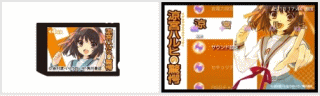

| フェーズ2 B2 1日目・2日目 | |||||||||||||||||||||||||||||||||||||||||||||||||||||||||||||||||||||||||||||||||||||||||||||||
| 1日目 | |||||||||||||||||||||||||||||||||||||||||||||||||||||||||||||||||||||||||||||||||||||||||||||||
・2回のイベント選択は、目立つほうを選ぶのが正解。
・「クライミングウォール体験会」「叫べ！ 大声コンテスト」を選択していればB2ルート維持でアイテム「12 古泉の連絡先」入手。 |
|||||||||||||||||||||||||||||||||||||||||||||||||||||||||||||||||||||||||||||||||||||||||||||||
| 2日目 | |||||||||||||||||||||||||||||||||||||||||||||||||||||||||||||||||||||||||||||||||||||||||||||||
|
|||||||||||||||||||||||||||||||||||||||||||||||||||||||||||||||||||||||||||||||||||||||||||||||
>>TOP PAGE |
|||||||||||||||||||||||||||||||||||||||||||||||||||||||||||||||||||||||||||||||||||||||||||||||
| 涼宮ハルヒの驚愕 Memory Stick PRO Duo ハルヒモデルのメモステ登場！ オリジナルのカスタムテーマがダウンロードできるプロダクトコード付き。 ■製品内容 ・Memory Stick PRO Duo(4GB) ・収納ケース ・プロダクトコード付 取扱説明書  | |||